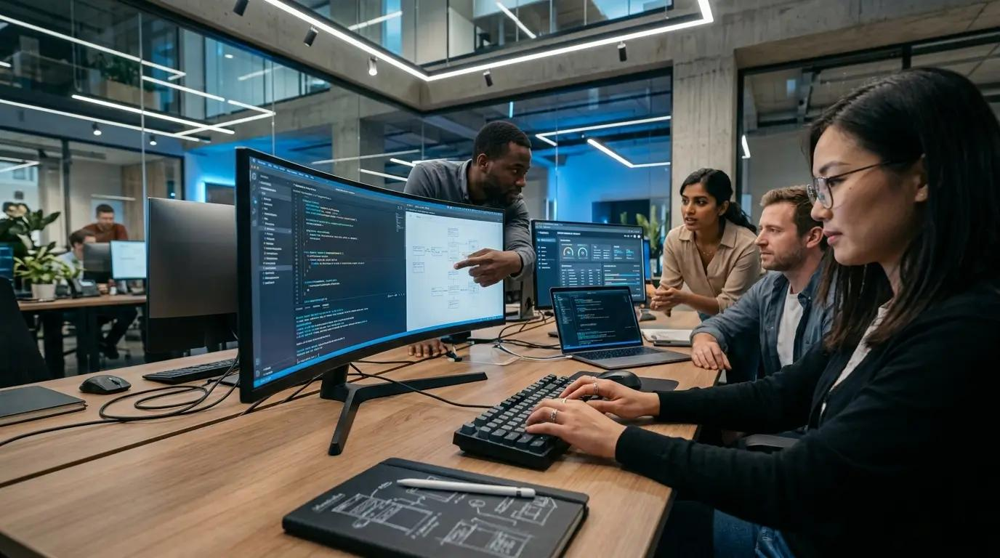
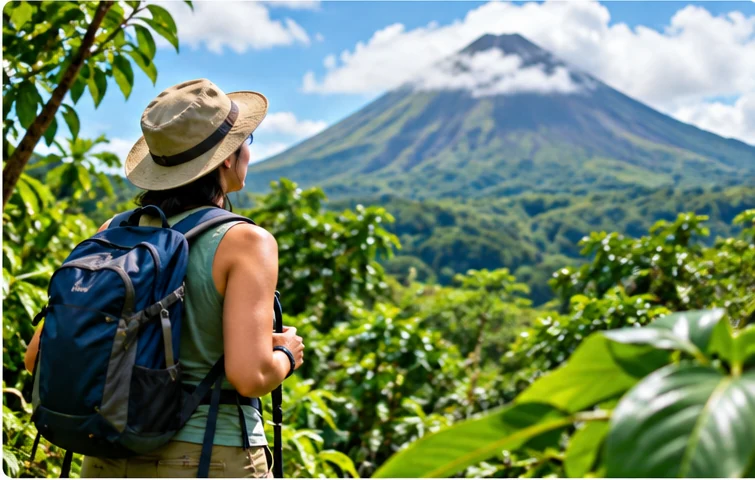
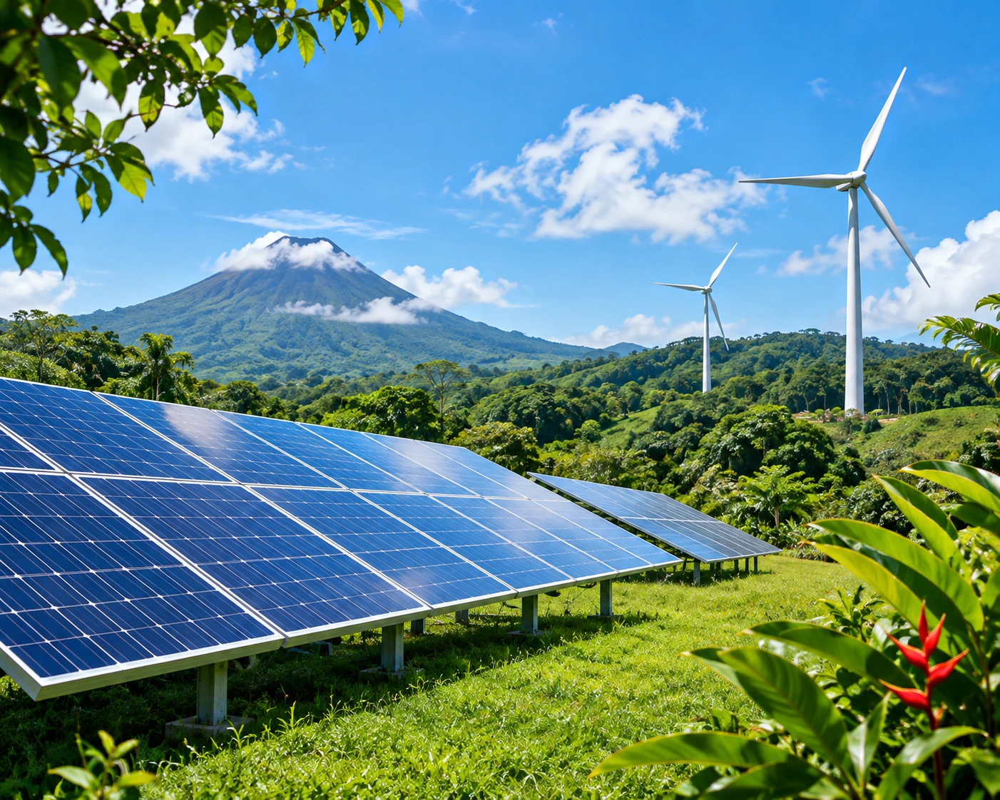
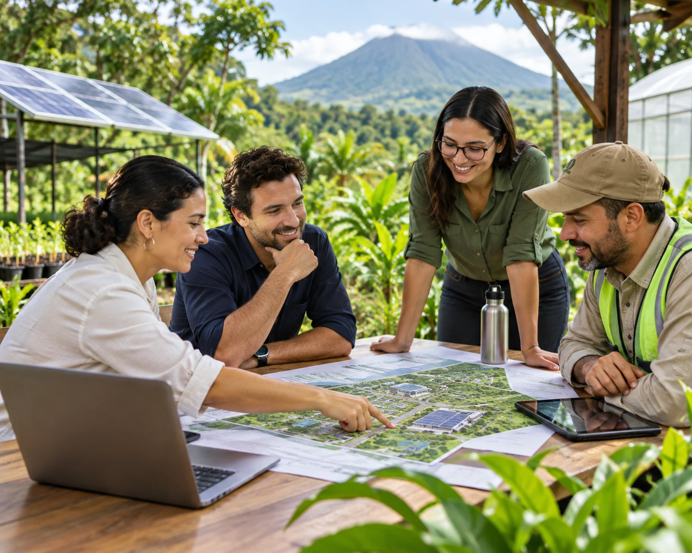
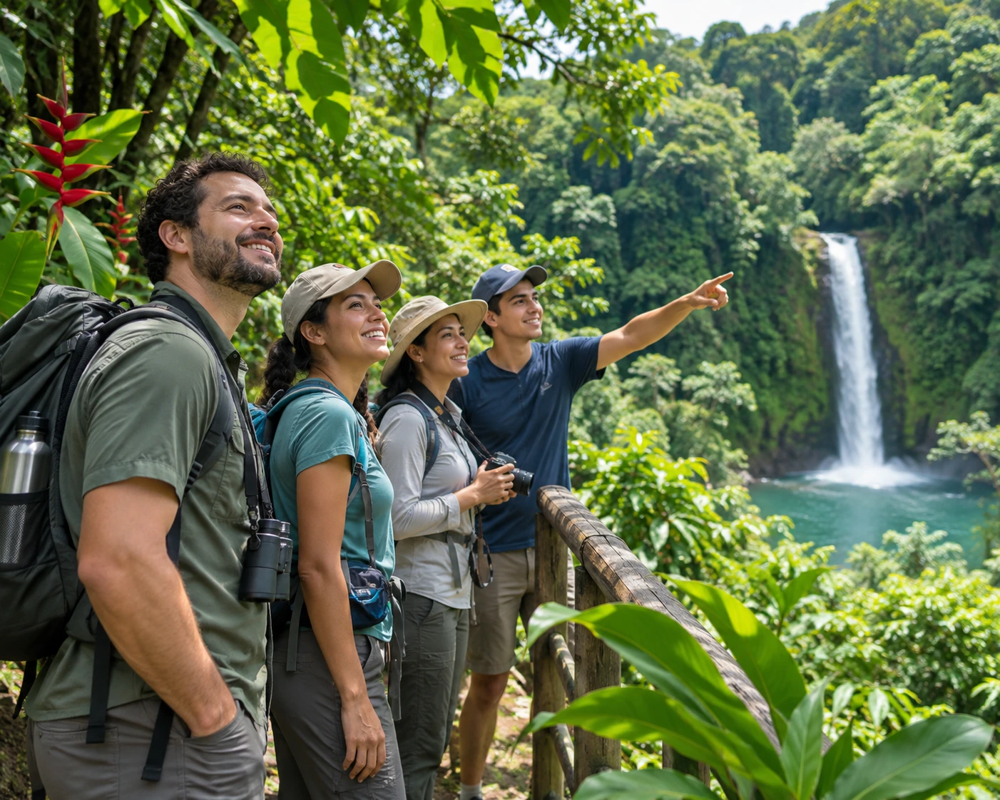

Talento humano
Profesionales preparados para desarrollar proyectos tecnológicos.
Talento, tecnología e innovación para conectar grandes ideas con oportunidades globales.
Explorar oportunidades
Costa Rica ofrece ventajas para empresas que buscan talento, innovación y crecimiento.
Profesionales preparados para desarrollar proyectos tecnológicos.
Desarrollo de nuevas soluciones digitales.
Compromiso con el desarrollo responsable y la protección ambiental.

Conexión con diferentes mercados internacionales.

Costa Rica cuenta con empresas, profesionales y comunidades que promueven el desarrollo tecnológico.
La colaboración y la innovación generan oportunidades para nuevos proyectos.
Conocer nuestros hubsConocé las principales áreas de desarrollo tecnológico en Costa Rica.
Creación de aplicaciones, plataformas y soluciones digitales.
Protección de sistemas, redes e información digital.
Desarrollo de herramientas y soluciones basadas en datos.
Soporte y soluciones tecnológicas para empresas internacionales.
El talento humano es uno de los recursos más importantes para el desarrollo tecnológico de Costa Rica.
La formación académica y las habilidades digitales permiten participar en proyectos de innovación.

Ejemplos de cómo la tecnología puede impulsar nuevas oportunidades.
Los emprendimientos tecnológicos desarrollan herramientas para resolver necesidades del mercado.
Las empresas incorporan nuevas tecnologías para mejorar sus productos y servicios.
La educación tecnológica abre oportunidades para nuevos profesionales.

El ecoturismo es fundamental porque atrae turistas a Costa Rica y promueve el cuidado de la naturaleza.
Costa Rica promueve iniciativas relacionadas con la sostenibilidad, la protección ambiental y el uso responsable de los recursos.

Aprovechamiento de recursos naturales para la generación de energía.
Soluciones que buscan reducir el impacto ambiental.

Crecimiento económico acompañado de prácticas sostenibles.

Crecimiento turístico enfocado en prácticas sostenibles.
Es una iniciativa presentada en este proyecto académico para mostrar oportunidades tecnológicas en Costa Rica.
Desarrollo de software, servicios digitales, ciberseguridad e innovación.
Podés explorar las otras páginas del sitio y consultar la sección de contacto.
¿Te interesa conocer más sobre las oportunidades tecnológicas de Costa Rica?
Explorá nuestro sitio para descubrir sectores, exportaciones, inversión y centros de innovación.
Volver al inicio